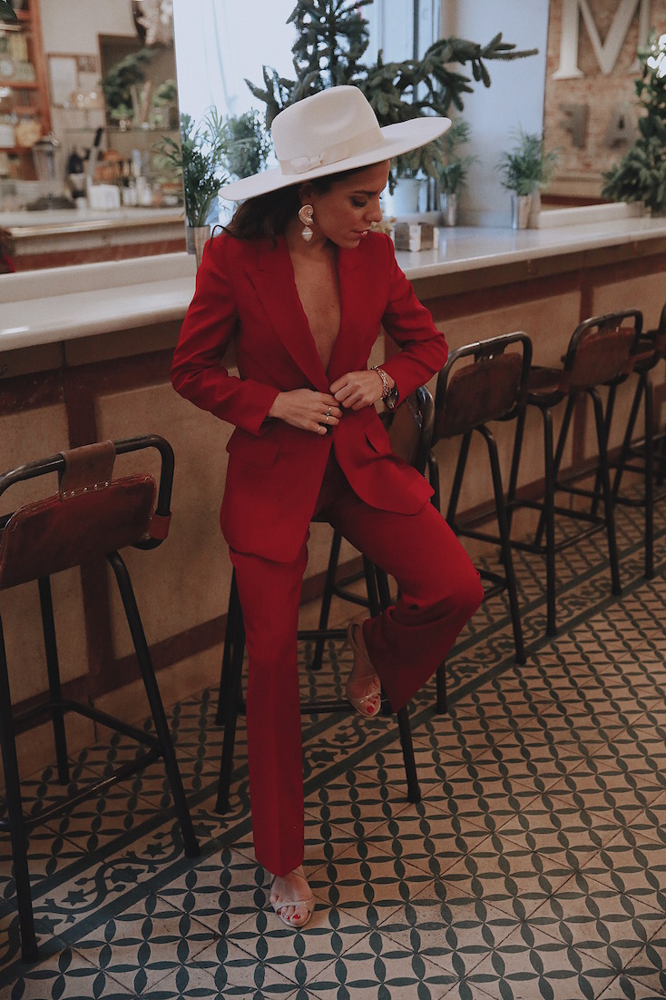
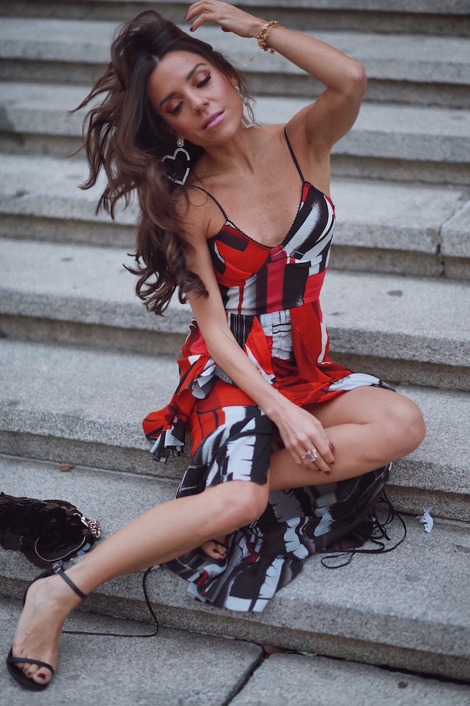
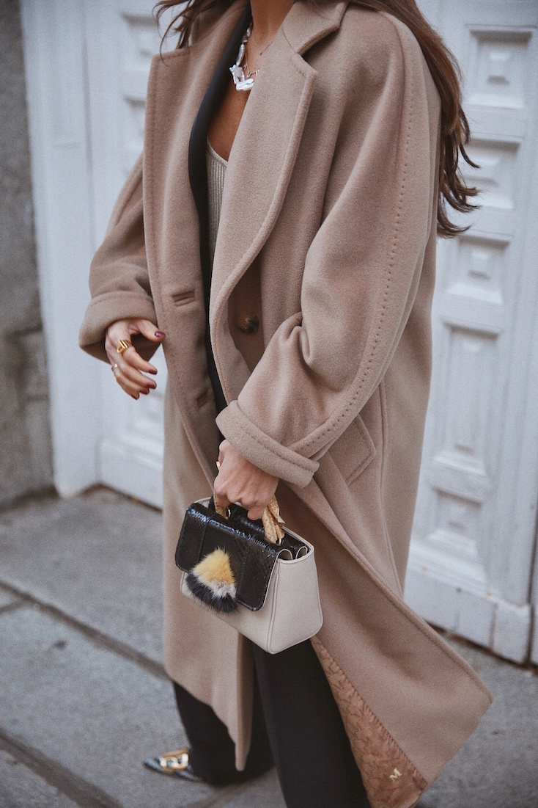
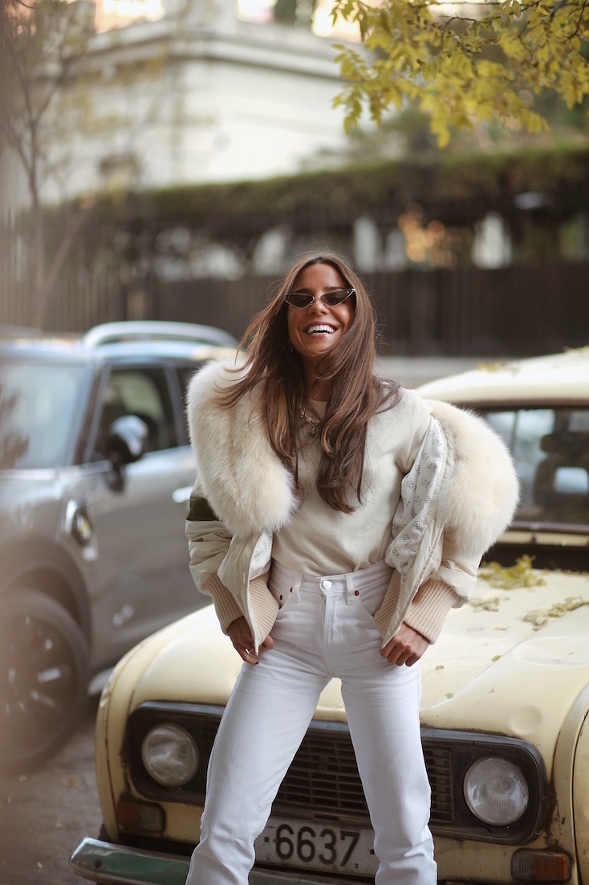

Outfits
Las mejores ideas para vestir bien
Las mejores ideas para vestir bien
 El otro día estrené este traje de chaqueta rojo de Massimo Dutti. Me fascina para estas fechas. No todo van a ser vestidos. Es elegante y favorecedor y con un buen pendiente y una sandalia haces el lookazo ideal para brindar en una noche especial. Es de Massimo Dutti, al igual que las fragancias que os muestro en las fotos. La firma lanza una nueva línea de tres fragancias inspiradas en el arte de viajar. Huelen de maravilla y el packaging es ideal. Un regalo perfecto para estas navidades. Os dejo con una selección de fotos que hicimos en Café Murillo.
 Es un vestido sexy, elegante y favorecedor. Para el maquillaje opté por un labio rosa y una sombra de ojos en tonos burdeos. La adoro para estas fechas. Siempre tez bronceada y ceja marcada. El beauty fue a cargo de Eva Escolano para YSL Beauty y no puede gustarme más. Natural y favorecedor al mismo tiempo. Vosotras, ¿qué tenéis en mente para fin de año? Miles de besos y a disfrutar de los últimos días de 2018.
 Este esmoquín fue una de las primeras cosas que me hizo Lorenzo Caprile después de mi vestido de novia. Quería un esmoquin bueno como fondo de armario que utilizase toda la vida diese igual el momento, la época o la celebración. Que también pudiese utilizar por separado; chaqueta o pantalón con distintas combinaciones. Ya tiene más de cinco años y sigue siendo una de mis piezas estrellas del armario.
 El blanco y los tonos beige en invierno me encantan. Esta bomber deportiva de Ducie me divierte para llevar con un look casual, jeans y zapatillas para un día todoterreno en el que no paro de moverme de un lugar a otro en moto, bici o caminando.Las gafas son de la nueva colección de Mypeeptoeshop y muy pronto estarán online, ¡espero que os gusten mucho! Miles de besos y feliz casi-fin de semana, xx.